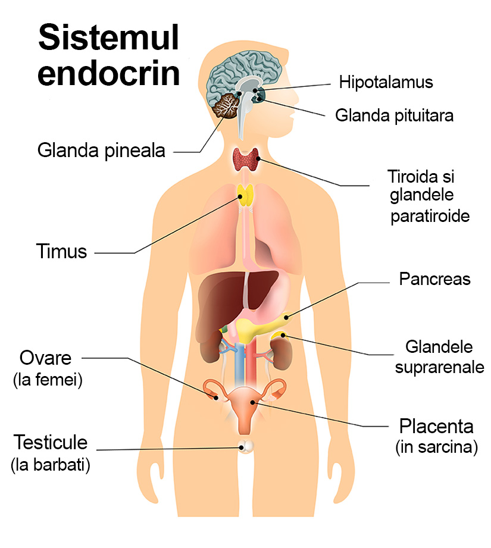

| Exemplu | Mecanism |
|---|---|
| TSH ↔ T3/T4 | Nivelul crescut de T3/T4 inhibă secreția de TSH |
| ACTH ↔ Cortizol | Cortizolul în exces inhibă hipotalamusul și hipofiza |
| Exemplu | Mecanism |
|---|---|
| Oxitocină în naștere | Contracțiile uterine stimulează eliberarea continuă de oxitocină |
Descoperă structura și funcțiile sistemului endocrin.
Sistemul endocrin este un ansamblu de glande care secretă hormoni direct în sânge. Acest sistem reglează funcțiile organismului precum metabolismul, creșterea, reproducerea și menținerea echilibrului intern. Spre deosebire de sistemul nervos, sistemul endocrin acționează lent și are efecte de durată, folosind mesageri chimici numiți hormoni.
Sub talamus, în encefal.
Conectează sistemul nervos cu sistemul endocrin.
Hormonii:
Funcție: Reglează alte glande și creșterea
Hormonii:
Funcție: Control direct, fără sinteză locală
Anterior de trahee, sub cartilajul tiroid.
4 glande mici situate pe fața posterioară a tiroidei
Parathormon (PTH)
Crește nivelul calciului în sânge prin acțiune asupra oaselor, rinichilor și intestinului
Răspuns rapid „luptă sau fugi” (fight or flight)
Insulele Langerhans (celule β, α, δ)
Reglarea glicemiei
Receptor: Membranar
Locație: Membrana celulară
Exemple: Insulină, ADH
Receptor: Nuclear
Locație: Nucleu
Exemple: Cortizol, T3/T4
| Exemplu | Mecanism |
|---|---|
| TSH ↔ T3/T4 | Nivelul crescut de T3/T4 inhibă secreția de TSH |
| ACTH ↔ Cortizol | Cortizolul în exces inhibă hipotalamusul și hipofiza |
| Exemplu | Mecanism |
|---|---|
| Oxitocină în naștere | Contracțiile uterine stimulează eliberarea continuă de oxitocină |
| Afectare | Hormon implicat | Manifestări |
|---|---|---|
| Hipotiroidism | ↓ T3/T4 | Creștere în greutate, lentoare |
| Hipertiroidism | ↑ T3/T4 | Slăbire, tahicardie, nervozitate |
| Diabet zaharat tip 1 | ↓ Insulină (autoimun) | Glicemie crescută, poliurie |
| Boala Addison | ↓ Cortizol / Aldosteron | Slăbiciune, hipotensiune |
| Sindrom Cushing | ↑ Cortizol | Obezitate facială, hipertensiune |
| Gigantism / Acromegalie | ↑ GH | Creștere exagerată |
| Nanism hipofizar | ↓ GH | Statură mică |
Secvență: TRH → TSH → T3/T4
Rol: Reglează metabolismul și dezvoltarea generală.
Secvență: CRH → ACTH → Cortizol
Rol: Activează răspunsul la stres și metabolismul glucidic.
Secvență: GnRH → FSH/LH → Estrogen/Testosteron
Rol: Controlează funcțiile sexuale și reproducerea.
| Tip receptor | Semnalizare | Exemple |
|---|---|---|
| GPCR (cu proteină G) | AMPc, fosfolipază C | ADH, TSH |
| Receptori enzimatici | Tirozin-kinază | Insulină |
| Receptori nucleari | Modifică expresia genică | Cortizol, T3/T4 |